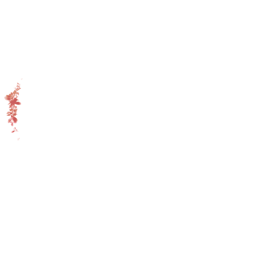

<!--
  Generated template for the LoginPage page.

  See http://ionicframework.com/docs/components/#navigation for more info on
  Ionic pages and navigation.
-->
<ion-header>
  <button ion-button clear menuToggle icon-only class="color-text-white">
    <ion-icon name="menu"></ion-icon>
  </button>
</ion-header>


<ion-content padding>
  <!-- <map></map> -->
  <span ng-if="pastDays" class="date"><span>{{pastDays}}</span>天<span>{{pastHours}}</span>小时<span>{{pastMins}}</span>分<span>{{pastSecs}}</span>秒</span>
  
  <footer class="confession">
    <p>I have no idea about when it begin </p>
    <p>
      but i can always remember the week full of desire to kiss u
    </p>
    <p>
      and the heartbeat before kiss u
    </p>
  </footer>
</ion-content>
